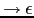

| 0 | p
|
{ $p{t} = { n => 0, ds => $ds{t}, ss => $ss{t} } } |
| 1 | p
|
{ $p{t} = { n => 1, ss => $ss{t} } } |
| 2 | ds
|
{ $ds{t} = { n => 2, d => $d{t}, ; => ';', ds => $ds{t} } } |
| 3 | ds
|
{ $ds{t} = { n => 3, d => $d{t} ; => ';' } } |
| 4 | d
|
{ $d{t} = { n => 4, INT => 'INT', il >$il{t} } } |
| 5 | d
|
{ $d{t} = { n => 5, STRING => 'STRING', il >$il{t} } } |
| 6 | ss
|
{ $ss{t} = { n => 6, s => $s{t}, ; => ';' ss => $ss{t} } } |
| 7 | ss
|
{ $ss{t} = { n => 7, s => $s{t} } } |
| 8 | s
|
{ $s{t} = { n => 8, ID => $ID{v}, = => '=', e => $e{t} } } |
| 9 | s
|
{ $s{t} = { n => 9, P => 'P', e => $e{t} } } |
| 10 | e
|
{ $e{t} = { n => 10, e => $e1{t}, + => '+', t => $t{t} } } |
| 11 | e
|
{ $e{t} = { n => 11, e => $e1{t}, - => '-', t => $t{t} } } |
| 12 | e
|
{ $e{t} = { n => 12, t => $t{t} } } |
| 13 | t
|
{ $t{t} = { n => 13, t => $t1{t}, * => '*', f => $f{t} } } |
| 14 | t
|
{ $t{t} = { n => 14, t => $t1{t}, / => '/', f => $f{t} } } |
| 15 | t
|
{ $t{t} = { n => 15, f => $f{t} } } |
| 16 | f
|
{ $f{t} = { n => 16, ( => '(', e => $e{t}, ) => ')' } } |
| 17 | f
|
{ $f{t} = { n => 17, ID => $ID{v} } } |
| 18 | f
|
{ $f{t} = { n => 18, NUM => $NUM{v} } } |
| 19 | f
|
{ $f{t} = { n => 19, STR => $STR{v} } } |
| 20 | il
|
{ $il{t} = { n => 20, ID => $ID{v}, ',' => ',', il => $il{t} } } |
| 21 | il
|
{ $il{t} = { n => 21, ID => $ID{v} } } |
| 22 | s  | { $s{t} = { n => 22, s => '' }} |
Por razones de espacio hemos abreviado los nombres de las variables.
El atributo t (por tree) es una referencia a un hash.
La entrada n contiene el número de la regla en juego.
Hay una entrada por símbolo en la parte derecha. El atributo v de
ID es la cadena asociada con el identificador.
El atributo v de NUM es el valor numérico asociado con el terminal.
Se trata de, siguiendo la metodología explicada en la sección anterior,
construir un analizador descendente predictivo recursivo que sea equivalente
al esquema anterior. Elimine la recursión por la izquierda. Traslade las acciones a los
lugares convenientes en el nuevo esquema e introduzca los atributos heredados que sean necesarios.
Genere pruebas siguiendo la metodología
explicada en la sección 4.4.1. ¡Note que el árbol que debe producir
es el de la gramática inicial, ¡No el de la gramática transformada!